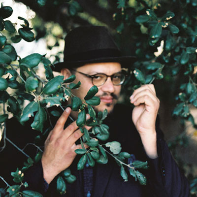
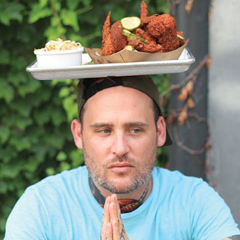
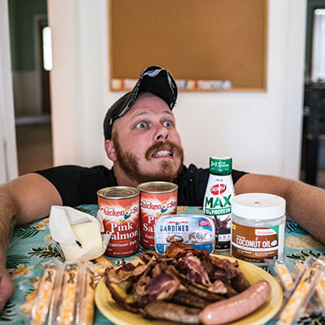

When we were young
Tulsans on their favorite things through their teenage years
Who was your favorite comedian as a teenager?
By Andrew Deacon
Trever Carreon
Donald Glover. As strange as it is, my favorite comedian as a teenager eventually flew the Millennium Falcon. His 2010 Comedy Central special was one of the first sets I was able to relate to and helped me understand what comedy was as a craft. His material’s relatability immediately made him my favorite for the next few years and planted the idea in my head that maybe I could do comedy. Thanks, Lando!
Mac Bryan
My favorite comedian as a teenager was the one and only Ellen DeGeneres. I found Season One of her sitcom and her HBO special The Beginning in my mom’s DVD collection when I was 13 and watched them on repeat. She is one of my biggest inspirations and I’m pretty sure I had a huge crush on her.
Lauren Turner
I loved watching Saturday Night Live.
I started watching it with my parents and watched it evolve through lots of cast members, but Chris Farley, Amy Poehler, and Kristin Wiig were my favorites. I would re-enact their sketches for my friends (to their dismay) and they made me want to be involved in comedy.
Sondra Slade
My favorite comedian as teenager was Richard Pryor. He told the best stories about his family and life. I would sneak his records into my room when my parents went to sleep. I would listen closely and laugh quietly.
The above respondents will be bringing local laughs to The Blue Whale Comedy Festival, August 29-31. For more information,
visit bluewhalecomedyfestival.org.
* * *
What was your favorite movie as a teenager?
By Jeff Huston
Kimberly Brown
Former film critic for Tulsa World and contributor to TulsaPeople
Pretty Woman hit theaters right around the time my friends and I were old enough to go to the movies in a big group—and it was pretty easy to sneak into R-rated movies. I think I saw this one five or six times in the theater, and I can’t imagine my ‘90s high school culture without Julia Roberts.
Chuck Foxen
Film programmer at Circle Cinema
I feel very lucky to have grown up in the ‘80s. Being poor made going to the movies was a very special treat. These films have a special place in my heart, and I think they were all tied to a birthday party: Flight of the Navigator (1986), Explorers (1985), Goonies (1985), Big Trouble in Little China (1986). Looking at this list, I definitely see a theme of space, exploring, and adventure in the stories, which is still something that entices me today.
Abby Kurin
Director of The Tulsa Office of Film, Music, Arts & Culture
Easy answer for me: Legally Blonde.
I was 17 when the film came out July 13, 2001. Reese Witherspoon was solidified as my favorite actor and leading lady. The story is about evolving, blazing your own path, and females supporting females. It still rings true today.
Sterlin Harjo
Filmmaker, co-founder at
FireThief Productions
My favorite movie as a teenager was The Lost Boys. This was peak “Cory(s) in my favorite movies from that era.” It was fun, funny, it had a mythology, and starred some of the coolest actors from that time. It ended in a great ‘80s blood bath. It took vampires and put them on a West Coast pier city with comic book nerds having to save the place. What more could you ask for?
* * *
What was your first restaurant job?
By Angela Evans
Ben Alexander
VP Culinary Operations,
McNellie’s Group
I started working as a busser when I was 16 at a place in Tempe, Arizona, called The Vine. I figured out the servers, the cooks—we’re all weird. No one should work in the restaurant biz unless you’re, like, a weird person.

Philip Phillips
Owner/Chef, Lone Wolf
+ Chicken and the Wolf
I was 13 and my first job was stocking the freezers at a convenience store outside of Sand Springs. I got fired my second shift for stealing beer. Don’t steal beer, kids!
Myssie Roberts
Executive Sous Chef, Bird & Bottle
I was a competitive figure skater in my teens, so my first job wasn’t until I was 18. I did dishes for a year at Panera Bread and I moved up to the line. That’s where the spark of cooking began for me, and I’ve been in love ever since.
Nico Albert
Executive Chef, Duet
My first restaurant job at a really high-end Oaxacan place in Scottsdale, Arizona, called Mezcal. I started as a hostess, then moved to bar-back. I lived on chips and salsa and sneaked tequila shots.
It was messy.
* * *
What song or album was formative to your teenage years?
By TTV staff
Keeng Cut
Hip-hop artist
My favorite album as a teenager would have to be The Love Below by Andre 3000 of Outkast. That album was a huge risk that just so happened to work and made history. I love it and it’s timeless.
Mitch Gilliam
Blind Oath, Lizard Police
Slipknot’s “People = Shit” was the first blast beat I ever heard and it blew my 7th grade mind. Still to this day it is one of the most ass-beating cave man riffs I’ve ever heard, and it’s just two notes played by ding-dongs in hockey and joker masks. The power I felt from dropping a guitar down and playing that ignorant low rider slam is ineffable. And I guess it formed me into a person who isn’t afraid to cut the elitist shit and tell you I still love Slipknot.
Allison Ward
Tom Boil
I was 16 in 2009 and was obsessed with The Fame Monster by Lady Gaga. She was the most readily available “freak” at the time—me and my friends would listen to that album over and over again. Specifically the songs “Telephone,” “Teeth,” and “Dance in the Dark.”
Branjae
Singer/songwriter
“The Boy Is Mine” by Brandy and Monica. Brandy Norwood was my absolute favorite. I watched her since Thea, the show she was on while coming up. I remember this one episode where Thea was supposed to go to a Luther Vandross concert but they lost the tickets so they we’re like, ‘Let’s do our own concert!’ and then Brandy started singing and I was like ‘Mama, Brandy can sing!’ I fell out onto the floor, I loved her so much. So I followed her whole career.
* * *
What was the first political issue you cared about as a teenager?
By Jessica Vasquez
Ahniwake Rose
Incoming Executive Director at Oklahoma Policy Institute
So many things—tobacco tax, voting for Clinton, Rodney King, Desert Storm. I just never knew how to get involved other than voting. So really voter registration was my first real issue. Voting as a catalyst for inclusion and voice.
Councilor Kara Joy McKee
Ward 4 Councilor on
Tulsa City Council
I co-founded my high school’s ecology club because I was concerned about climate change and humans’ interaction with other species. But my enthusiasm for political action began long before that with a campaign to remove Styrofoam trays from my school cafeteria. I’ve learned time and again to not be jaded because I don’t have to do everything, I just have to do my part.
Representative Regina Goodwin
Representative for District 73
at Oklahoma Legislature
One night when I was young, the police came knocking on the wrong door. As my mother opens the door, I am standing with her and the police already have pulled out a gun. I’m literally looking down the barrel of a gun. I’ll never forget that feeling. We have severe issues when it comes to policing and the treatment of Black citizens, and we are still working on it today.
Rosa Hernandez
Volunteer Executive Director at Dream Alliance Oklahoma - Tulsa
The first political issue I cared about as a teen was really just injustice as a whole. I didn’t like seeing poverty, homophobia, racism and oppression. Since I was a teen, I’ve seen all of these issues as intersectional.
.jpg)
.jpg)